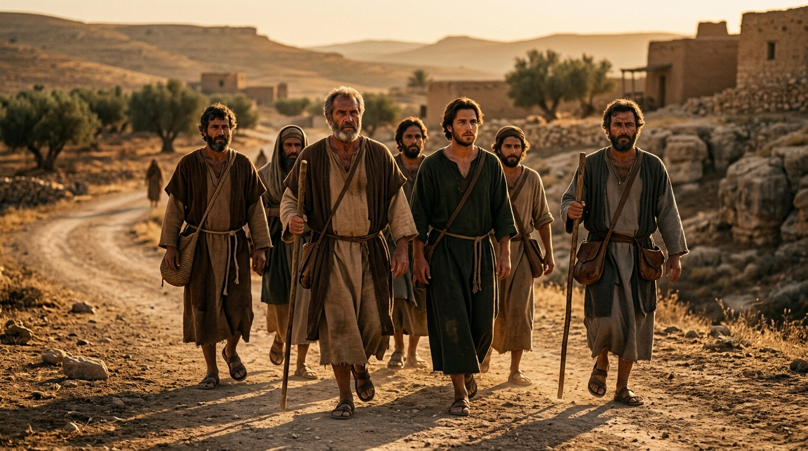

Os Construtores do Fundamento: De Homens Comuns a Testemunhas Oculares da Ressurreição
O termo grego apostolos significa literalmente "enviado", "mensageiro" ou "aquele que é despachado com uma comissão de total autoridade por parte do remetente". No contexto do Novo Testamento, o colapso do isolamento religioso antigo dá lugar a um movimento transcultural sem precedentes, encabeçado por um grupo peculiar de homens chamados por Jesus de Nazaré. Escolhidos não entre a elite erudita do sinédrio de Jerusalém ou entre os filósofos refinados de Atenas, mas recrutados majoritariamente nas margens da sociedade da Galileia — pescadores rústicos, cobradores de impostos desprezados e homens de temperamento volátil —, os apóstolos constituíram os pilares humanos fundamentais sobre os quais Cristo edificou a Sua Igreja.
A jornada dos apóstolos transita do fracasso acanhado e da incompreensão crônica durante os anos do ministério terreno de Jesus para uma ousadia inabalável após o evento transformador do Pentecostes. Munidos pelo poder do Espírito Santo, eles abandonaram o medo, suportaram prisões, açoites, exílios e martírios violentos, transformando o Império Romano através da proclamação inflexível do Evangelho da graça. Este estudo aprofundado examina a anatomia da transformação apostólica e o legado teológico indelégue deixado por esses pioneiros da fé.
Índice do Estudo:
- 1. O Chamado e a Formação: A Galiléia e a Escola do Mestre
- 2. Simão Pedro: O Impetuoso Apóstolo da Confissão e do Arrependimento
- 3. João: O Discípulo Amado e a Profundidade Teológica da Revelação
- 4. O Apóstolo Paulo: O Teólogo dos Gentios e a Expansão Global do Evangelho
- 5. O Testemunho do Sangue: O Martírio e a Consagração Apostólica
- 6. Tabela Analítica e Aplicação Existencial do Ministério Apostólico
1. O Chamado e a Formação: A Galiléia e a Escola do Mestre
O método de discipulado de Jesus subverteu todas as convenções pedagógicas do mundo antigo. Ao contrário dos rabinos da época, que selecionavam alunos brilhantes que se ofereciam para estudar a Torá, Jesus tomou a iniciativa soberana de caminhar pelas praias do mar da Galileia e convocar diretamente homens comuns ocupados com suas redes de pesca ou cobranças de tributos. Durante três anos, esses homens conviveram diariamente com o Mestre, ouvindo Suas parábolas, observando Seus milagres e experimentando correções constantes de suas ambições terrenas e visões nacionalistas estreitas.
Apesar dessa proximidade física privilegiada, os evangelhos registram com crueza as frequentes falhas, disputas por posições de destaque, momentos de pouca fé diante das tempestades e o pânico covarde manifestado na noite da prisão de Jesus no Horto do Getsêmani, quando todos o abandonaram e fugiram. Esse retrato realista demonstra que a qualificação apostólica não repousava sobre virtudes inerentes, mas na soberana graça capacitadora de Cristo após a Sua ressurreição.
2. Simão Pedro: O Impetuoso Apóstolo da Confissão e do Arrependimento
Simão (a quem Jesus alcunhou de Pedro, a "rocha") sobressai-se como o líder natural do colégio apostólico, caracterizado por uma franqueza impulsiva e apaixonada. Foi Pedro quem proferiu a sublime confissão cristológica de que Jesus era "o Cristo, o Filho do Deus vivo", recebendo a promessa de que sobre aquela rocha a Igreja seria edificada. No entanto, foi o mesmo Pedro que, instantes depois, repreendeu o Mestre e, na noite trágica do julgamento, negou conhecer a Jesus três vezes com juramentos e maldições para salvar a própria pele.
O ponto de inflexão na biografia de Pedro ocorreu quando o Senhor ressuscitado olhou diretamente para ele e, posteriormente, restaurou-o solenemente às margens do mar da Galileia através de uma tríplice pergunta sobre o amor. Transformado pelo fogo do Espírito Santo no Pentecostes, Pedro ergueu-se com intrepidez para pregar o primeiro sermão público da Igreja, convertendo milhares de almas e selando, ao fim de sua vida, sua fidelidade a Cristo ao ser crucificado de cabeça para baixo por recusar-se a morrer da mesma forma que seu Senhor.
3. João: O Discípulo Amado e a Profundidade Teológica da Revelação
João, filho de Zebedeu e irmão de Tiago, integrava o círculo mais íntimo de Jesus, sendo identificado nas narrativas como "o discípulo a quem Jesus amava". Inicialmente rotulado ao lado de seu irmão como um dos "filhos do trovão" devido ao temperamento explosivo e intolerante, João experimentou uma profunda transição espiritual, convertendo-se no apóstolo do amor fraternal, sem contudo perder o rigor intransigente contra a falsidade doutrinária.
Sua contribuição teológica para o cânon neotestamentário é colossal: o Quarto Evangelho, focado na divindade pré-existente do Logos; suas três epístolas profundas sobre a comunhão com Deus; e o livro do Apocalipse, escrito durante seu confinamento na ilha de Patmos. João foi o único dos doze apóstolos que sobreviveu à velhice, testemunhando a consolidação e a expansão da Igreja primitiva em meio às primeiras ondas de perseguição imperial romana.
4. O Apóstolo Paulo: O Teólogo dos Gentios e a Expansão Global
Embora não tenha integrado o grupo original dos doze durante o ministério terreno de Jesus, Saulo de Tarso recebeu diretamente de Cristo o comissionamento apostólico na estrada de Damasco, tornando-se o apóstolo dos gentios. Dotado de uma erudição teológica farisaica impecável e de um intelecto brilhante, Paulo sistematizou doutrinas fundamentais da fé cristã, como a justificação exclusiva pela graça mediante a fé, a união mística do crente com Cristo e a dinâmica da santificação operada pelo Espírito Santo.
Através de suas três grandes viagens missionárias, Paulo cruzou o mar Egeu, plantou comunidades cristãs por toda a bacia do Mediterrâneo e redigiu a maior parte das epístolas do Novo Testamento. Sua perseverança inabalável diante de naufrágios, açoites e prisões romanas evidenciou que a mensagem da cruz havia capturado inteiramente sua existência.
5. O Testemunho do Sangue: O Martírio e a Consagração Apostólica
A tradição histórica e eclesiástica atesta que, com exceção de João (que faleceu de causas naturais na velhice após o exílio), praticamente todos os apóstolos selaram o seu testemunho com o próprio sangue através de martírios brutais em diferentes regiões do mundo conhecido. Tiago foi executado à espada por Herodes Agripa; André foi crucificado em uma cruz em formato de X; Bartolomeu sofreu flagelação extrema; Tomé foi traspassado na Índia.
Esse testemunho unânime do martírio constitui um argumento histórico formidável em favor da ressurreição de Cristo: homens não morrem voluntariamente por uma mentira que sabiam ter inventado. O sangue dos apóstolos converteu-se, conforme célebre frase da antiguidade cristã, na semente geradora e inesgotável da Igreja.
6. Tabela Analítica e Aplicação Existencial do Ministério Apostólico
| Apóstolo | Perfil e Marca Distintiva | Contribuição Teológica e Prática |
|---|---|---|
| Pedro | Impetuoso, porta-voz inicial, restaurado após a queda. | Liderança na fundação da Igreja primitiva e cartas de encorajamento na tribulação. |
| João | O discípulo amado; profundidade mística e amor sacrificial. | Revelação da divindade de Cristo, exortação ao amor fraternal e visão escatológica. |
| Paulo | O teólogo erudito, missionário incansável dos gentios. | Sistematização da soteriologia da graça e expansão transcultural do Evangelho. |
💡 Aplicação Prática: O Que Aprendemos com os Apóstolos?
O estudo da vida dos apóstolos derruba qualquer barreira que possamos erguer entre a nossa humanidade falha e a utilidade no Reino de Deus. Eram pessoas comuns, limitadas, medrosas e sujeitas a erros crassos. Contudo, quando foram preenchidas e capacitadas pelo Espírito Santo, viraram o mundo de cabeça para baixo. O sucesso da missão deles não dependeu de talentos sobre-humanos, mas de uma rendição total ao Senhor ressuscitado.
A aplicação suprema deste estudo é examinar se estamos vivendo de acordo com o fundamento apostólico deixado nas Escrituras. Que a coragem indômita, a fidelidade doutrinária e a disposição ao sacrifício demonstradas por esses homens inspirem a nossa caminhada diária, transformando-nos em testemunhas autênticas da graça de Cristo na sociedade em que vivemos.
Navegação rápida:
- Voltar ⬅️ 5. Tipologias
- Início 🏠 Vitrine: Personagens Bíblicos
Apoie este projeto 🌱
Se este estudo foi útil, considere apoiar a manutenção do site.
Chave PIX (Celular):
marcosmontanaria@gmail.com